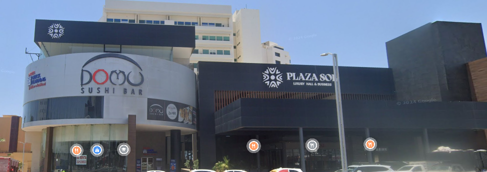

Buen restaurante, ámbito como de exclusividad con costo relativamente bajo (hablando desde mi privilegio) El rollo que más le gusta a mi novia y a mi es el México, no se lo pueden perder la verdad.
Si buscas relajarte jugando billar y comida es un buen lugar perfecto y economico, cerca de muchos sitios nocturnos (antros) si buscas que siga la fiesta. Para mas informacion hacer click en la imagen